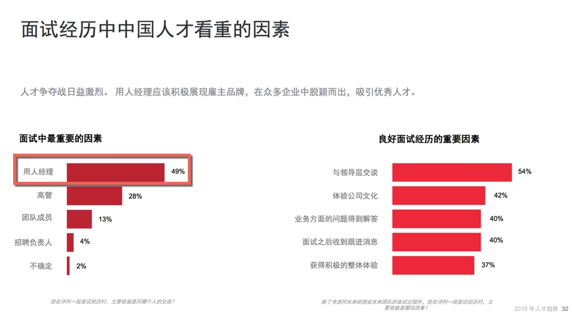

开放式招聘 003：全员招聘——面试体验
招聘也是企业的一种销售——将企业“销售”给合适的候选人。
New LinkedIn research has revealed the striking results that emerge when marketing and recruiting Not only do both departments benefit greatly, but the company as a whole does as well— to the tune of a 35 percent increase in sales.
大意：协同市场与招聘功能，不仅各自部门都得到好处，更使得企业增加了35% 的销售额
求职者其实是公司潜在的客户，好的体验和坏的体验带来极不同的结果。
我们来看两个对比：
1）坏的招聘体验的影响，只是大部分的招聘人员未觉察或者不愿如此察觉。
昨天看到一份数据显示：
有 58% 没有收到目标公司答复的应聘者，较少可能购买该公司产品；更惊人的是，面试后没有得到结果反馈的人中有65% 也有这样的倾向。
因为没有看到这份数据的调查样本范围，而且来自一个提升招聘体验的公司员工。这份数据还要谨慎看待，不过它倒是提醒我们一个基本事实：没有人喜欢坏的面试体验。
2）好的招聘体验是什么效果呢？我们来看一份好的招聘体验带来的效果：
In fact, 80% of people who have been interviewed and rejected report that they would still recommend a friend apply to Google.
大意：谷歌面试过和拒绝过的候选人中有80% 的候选人还是会推荐他们的朋友应聘谷歌的职位。
谷歌还有一个实践分享，它说：
Google wants interviewing to be part of every Googler’s job
谷歌希望面试成为每个员工职责的一部分。
然后在文章中，它列出了谷歌招聘团队对面试官们的培训和支持的方法，以此达成让面试工作可以成为每一个谷歌人工作中的一部分。
为什么全员面试
为什么这么做呢？
上面我们看到，谷歌在招聘实践中很重要的一部分，其实是全员招聘来提升面试体验。
而面试体验的必要性，更多的故事你可以在这儿读到
谷歌
谷歌为什么这样做呢？它说了 2 个方面的原因：
1） 相比公司职位与福利，候选人关更注与用人部门面试官的沟通
谷歌内部调研显示，在招聘体验上，候选人提及最多的是他们与面试官的交流——对大部分候选人来说，这方面的重要性高于岗位类别、福利、也高于与招聘人员的交流；
谷歌要更突出部门面试官在面试过程中的作用，不仅是因为候选人重视，也因为
2）企业在面试中不仅能找到合适的候选人，还有助于巩固企业文化，有助于增进同事情谊，也还可以增强现有员工对公司的归属感比如当员工对面试决策能发表个人见解，能够增强团队成员的归属感。
3）另外，我们也可以看到第三点：面试官团队一般都需要知道并把握部门的用人要求、以便挑选新人更快地协同作业、融入团队。如此公司的用人理念在招聘过程中传达给所有的同事，也一定程度上为他们预备成为管理者，所需的组建团队的能力。
中国企业
那么在国内情况如何呢？情况其实和谷歌的内部数据一致。
Linkedin 的一份数据显示：面试经历中中国人才看重的最重要的因素也是与面试官的交谈，特别是用人经理的交谈， 招聘负责人反而是其次。

面试体验如此关乎人才得失，你也注意到了吧，这个体验的提升并不只是招聘人员工作，还得更多的部门参与进来，那么如何呢？
继续走老路吗？还是换种姿势拥抱变化呢
如何全员招聘？
谷歌继续分享了它们的训练面试官的实践，感兴趣的点击链接可见具体内容。过于面试官的训练，我会另外一篇文章来介绍。
在我看来，为了提升招聘体验和加快招聘效率，还有很多做法：
- Team 展示—— 团队成员、团队气氛 、团队间交流风格
- 多成员一起参加面试，投入到面试环节——面试并一起做出录用决策；
- 投入到新人 Onboarding（接待、指定同事指导 ）
- 投入在试用环节
以上是全员招聘的一些实践环节，范围其实很广。
而之所以这么强调面试体验，是因为招聘体验已然关乎招聘成败。
在 Linkedin 2015 年人才趋势报告的数据也揭示：

再次强调，好的招聘体验能带来更多的候选资源。
80% of people who have been interviewed and rejected report that they would still recommend a friend apply to Google.
被谷歌面试过和拒绝的人员中，有 80% 的人说他们会推荐朋友来申请谷歌的工作。
除此以外，我所说的全员招聘还有两个很重要的组成部分： 「内部推荐」+「内部招聘」
我们在该系列继续探讨。
开放式招聘 004：全员招聘——内部推荐
开放式招聘 005：全员招聘——内部招聘
欢迎联系 Arvin Yu , 邮箱：yuyandong@outlook.com
或长按以下二维码关注 公众号： 稻田无忧

本作品采用 知识共享署名-非商业性使用-禁止演绎 3.0 Unported许可协议 进行许可。

心智笔记：拥抱不确定
看不清未来的时候，有些东西曾经这样启动过。
2015年中，摘抄了部分书的句子，当时发在微博中，没打算发文，今天看笔记，看到它们
觉得还是挺有意义的。
在的历史里，它们伴生于“错误”中。 看不清未来的时候，有些东西曾经这样启动过。
一边是「错误」文化的重新框定，一边是「错误」并不是静止，而是动态。并且我们处于一个不确定的世界。
处在这个世界，没有行动是单面向的。
模糊不确定时——这样行动
- 丹尼尔.丹尼特<第三种文化>
当自然母亲要设计一个系统时，那是“多多益善，大家来开个晚会，然后不知怎么着，我们就造出了这个东西”这是个非常不同的组织结构。
- 格尔德.吉仁泽在《风险与好的决策》
不同行业、群体都有各自的错误文化。一个极端是消极的错误文化，人们不敢犯任何错误，无论是有益还是有害。一旦犯了错误，他们就会尽力掩盖。人们不可能从错误中学习、发现新的机遇。另一个极端是积极的错误文化，所有错误都是透明，人们敢于犯有益的错误，并能从有害的错误中学习
- 戴维.多伊奇 《无穷的开始——世界进步的本质》
易谬主义让我们不要寻求权威，而是承认我们可能一直在犯错，并努力纠正错误。我们通过寻求解释来做到这一点，好解释是难以改变的，改变细节会毁掉整个解释，这是科学革命的决定性因素......而实验检验不是。
易谬主义者认为，就算是最好、最重要的解释性理论，在真理外也包含着缪误，因此他们随时准备好修正理论以做到更好。它的逻辑是，人不仅要试图修正过去错误观念，还希望在未来能发现那些迄今为止还没有人质疑或认为有问题的错误观念，并且修正。因此易谬主义是知识开启无限增长之路的关键」
- 唐纳德.A.舍恩《反映的实践者》
他以草图和空间行动语言为媒介，通过自己的做法展现出选址上的建筑物，这些做法也是一种实验。每个做法的结果，都是依照一种或一种以上设计词汇的观点，加以描述和评估。前后做法之间息息相关，而且每个做法都会创造出新的问题，等着设计者加以描述和解决。
奎斯特的设计方式就是找出一系列的做法、结果、因果关系、评鉴和进一步的做法。
- 丹尼尔.T.威林厄姆 《为什么学生不喜欢上学》
豪斯能从记忆中快而准确地获取正确信息，这些信息年轻医生也有，只是他们想不到而已。专门技能体现在犯的错误上。专家是”优雅地犯错“，专家在得不到正确答案时，那个错误的答案通常是个最佳的猜测。豪斯在做出正确的诊断前会花一点时间，但是他的猜测总是有根据的
- 邓肯.J.瓦茨《六度分隔》
当一个公司启动一个新的大项目的时候，参与的人们其实都还不知道这个项目如何进行。在变化迅速的行业中，从汽车到软件，在生产开始之前就完成设计的情况是没有的，项目效率的评估标准也是随着项目的进展而逐渐形成的。而且，没有一个人在整个项目中的地位和作用是事先确定好的
每个人都是从自己最初的、 一般的理解开始进入项目，并在随后和项目的其他参与者的反复交流中逐步明确和细化自己的职责。
欢迎联系 Arvin Yu , 邮箱：yuyandong@outlook.com
或长按以下二维码关注 公众号： 稻田无忧
本作品采用 知识共享署名-非商业性使用-禁止演绎 3.0 Unported许可协议 进行许可。
Copyright © 2015 Powered by MWeb, Theme used GitHub CSS.